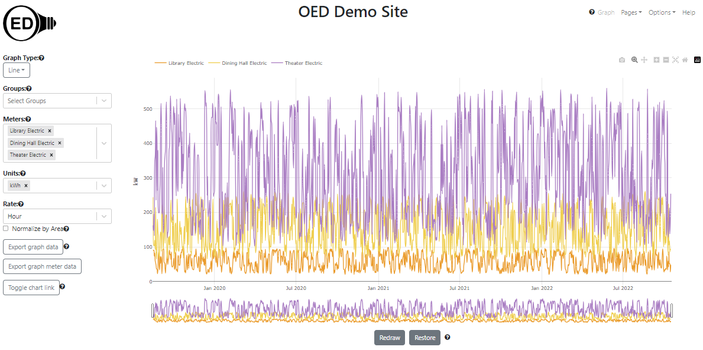

OED Documentation
Area Normalization
Version V1.0.0
Documentation overview
User documentation
Information
Graphing
Meters/Groups
Other Features
Admin documentation
Documentation versions for this page
Overview
The energy used by a building generally relates to its size. For example, suppose building A is 10 times larger and uses 3 times more energy than building B. In absolute usage, building A would have values that are 3 times larger than building B. However, if you normalize the usage by area then building A uses 3 / 10 = 0.3 or 30% of the energy of building B per unit of area. The un-normalized data in OED would show the first result and the normalized by area would show the second result. Both have their own value so OED supports both views.
Usage
One can choose to normalize by area or not by checking the box shown labeled "Normalize by Area" in the figure below (highlighted in blue box). This can be done for any graphic. It cannot be done for raw units because it is unclear what area normalization would mean. For example, temperature per sq. foot is not something one talks about.
Once "Normalize by Area" is selected (checked) then a dropdown menu will appear that allows one to select the unit for area normalization. The choices are "sq. feet" and "sq. meters". The default value will be the one selected by the site. This is shown in the following figure: 
Once area normalization is selected, only meters and groups that have an assigned area will be selectable. In the following figure, the "Campus Recycling" meter is grayed out under "----- Incompatible Meters -----" because it is not assigned an area. The "Library temperature" and "Theater temperature" meters are also listed here since temperature is a raw unit.
If a meter or group was already selected but it is not assigned an area then it will be placed in the "----- Incompatible Meters -----" area and grayed out. However, if area normalization is unchecked, it will again appear on the graphic and as a selected meter. Note that other meters/groups can appear grayed out because they are incompatible for other reasons such as an incompatible unit.
As an example, the following figure shows the un-normalized by area graphic for the electric usage for three meters: 
As shown, the energy usage (from least to most) is "Library", "Dining Hall" and "Theater". In the example description, the area for the library is 100,000, the dining hall is 1,000 and the theater is 10,000 where all areas are in the unit of sq. meters. Thus, when area normalization is chosen in the following figure, the relative usage changes from least to most to be "Library", "Theater" and "Dining Hall".
The fact that the library used the least electricity but is the largest building shows it is uses very little electricity both absolutely and for its size. It is so low compared to the others that when normalized by area it is virtually on the x-axis. The usage of the dining hall and theater change position because even though the theater uses more electricity it is 10 times larger in area. That is why the theater went from having values of around twice to dining hall to one-fifth the dining hall when normalized by area (2 / 10 = 1 / 5). Also note that the y-axis label went from "kW" to "kW / sq. meters" to reflect that the readings are normalized by area.
As one example of another graphic normalizing by area, the following figure shows the above figure as a stacking bar graphic with 4 week bars. Again, the library values are very small at the bottom of each bar.
Details
Note that changing the "Area Unit" changes the y-axis label to reflect the chosen unit but does not change the look of the graphics. One is normalizing by a different value but the change is the same for all meters/groups. Exporting graph data will reflect the selected unit.
For data un-normalized for area, the sum of the underlying meters equals the meter value. However, this may not be the case when normalizing by area. For example, in the following figure, the sum of the electric usage of the first and second floor of the "Great Dorm" is equal to the group that contains these two meters ("Great Dorm Electric").
When you normalize by area, the sum of the two meters is no longer equal to the group as seen in the following figure:
This fact is clear from seeing that the group lies between the two meters rather than above them. The area of each meter is 5,000 sq. meters and the area of the group is 10,000 sq. meters since it is the area of the two underlying meters. The reason the group is no longer the sum of the meters in this case is because the sum of two factions with the same denominator does not equal the sum of the numerators divided by the sum of the denominators. For example, say both floors of the Great Dorm had a reading of 500 then the group that has both of these would be 500 + 500 = 10,000. If you normalize by the area, each meter has a value of 500 / 5,000 = 0.1 so the sum is 0.2. The group has a value of (500 + 500) / 10,000 = 0.1. This is smaller than the sum of the group values and that is why the group is no longer above the meters when normalized by area. However, it makes sense because the usage per sq. meter is the same for the two floors and the group has that same usage of 0.1.